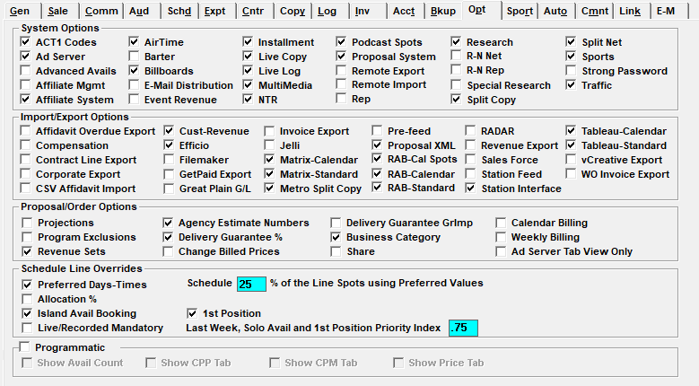

Options

Depending on the version of software installed, the Options tab may look different from the picture above and may have some different options available.
System Options
Act 1 Codes: When checked on, this makes it possible to enter Act 1 Codes for contract lines, which can then be exported using the Proposal XML export (version 7.1 and above).
Ad Server: Enables the Digital tab on the Proposal and Orders screen and the Podcast/Ad Server vehicle medium setting (version 8.1 and above).
Advanced Avails: When checked on, the “Advanced Avails” feature becomes activated, making it possible to turn the feature on for individual users on the User Options screen. For users with access to the Advanced Avails feature, they will see three additional tabs on the Proposal screen: Avails, Protection, and Research. The Avails and Protection tabs will also be shown on the Orders screen. For more information, see the User Options help document, and the Sales Proposal Guide and Orders Screen help documents that are available on the Counterpoint website. (Advanced Avails are available on Version 7.1 and above only.)
Affiliate Mgmt: This turns on the Affiliate Management Screen in the Affiliate Tracking System. This will allow you to track compliance, enter action comments, and home in on potential stations for affiliate sales.
Affiliate System: This activates the Affiliate Tracking System.
AirTime: Enables the Air Time tab on the Proposal and Orders screen (version 8.1 and above).
Barter: Barter will allow you to define and track your barter agreement with Rep stations/programming. This is only applicable with Rep vehicles. The Network to Station report will track Barter inventory and dollars. If on version 7.1 or higher, this must be checked on to use acquisition costs. Checking this on in version 7.1 and above will also cause a column to appear in the rate card screen, in which default acquisition costs for orders can be entered.
Billboards: If checked, you have the option of automatically attaching open and/or closed billboards to sold spots in the proposal/order. Billboards can also be set up in the Programming Library screen to be independent of contracted avails.
Email Distribution: Enables the Email Distribution feature (version 7.1 and above).
Event Revenue: Allows receivables to be updated by event number, allowing you to view and record revenue for each event defined on a schedule, rather than one lump sum against the sports vehicle. The only exception is if a sport event is within a virtual package then receivables will not be by event number. Each collection screen action (except Ageing) will include the event number in the display. Proposals/Orders that have Sports Vehicles and report revenue by event, will not be able to use Installment Billing.
Installment: Installment Billing allows you to create an invoice billing amount independent of where the spots air; i.e. bill the entire contract upfront, or bill the same amount of dollars every month. If using Installment Billing, NTR will print alongside airtime on one invoice.
Live Copy: If checked, you will be able to indicate that a contract includes Live Copy at the schedule line level on proposals/orders. You will also be able to enter a live copy script in the Copy Inventory Screen.
Live Log: Allows a user to post air times as spots are airing on the Live Log screen.
Multimedia: If using the Sports Module, you can sell non-broadcast inventory, such as signage hospitality tents by season. Unlike NTR, you can track Multi Media item’s inventory.
NTR: Enables Non-Traditional Revenue (NTR) on Proposals/Orders.
Podcast Spots: Enables the Podcast medium setting in Vehicle Options (version 8.1 and above).
Proposal System: This will activate the Proposal Sales System.
Remote Export and Remote Import: This is used to export a log into a CSV file from one database which can be imported into another network’s Counterpoint database. One Network must be set to Remote Export and the other set to Remote Import.
Rep: This allows you to Rep stations or programs. Rep vehicles do not need inventory, are not trafficked, and do not generate logs.
Research: This turns on the Demo Bar feature in the Proposal Screen.
R-N Rep, R-N Net: This creates a Rep-Net relationship between databases, allowing insertion orders to automatically be imported from the selling network to the repped network/station. This has nothing to do with Rep vehicles. Additional set up is required in the Site Options->Link tab.
Special Research: This allows Research Estimates to be entered. If activated, a new field appears in the Site Options->Comments tab that must be filled out (Research Estimate Comment).
Split Copy: This allows your advertisers to target different regions or stations throughout the copy with unique copy. You must use the Affiliate System to utilize Split Copy.
Split Net: The Split Network module allows you to sell portions of your network to different advertisers. Unlike Split Copy, in which one advertiser airs different copy across your network, Split Network buys might sell the Northern portion of the country to Chevy and the Southern to Ford. You must use the Affiliate System to utilize Split Network.
Sports: Activates the Sports Module, which allows you to sell Sports Events by season.
Strong Password: If checked, passwords must be reset every six weeks, and must contain alpha, numeric, and special characters, as well as conform to other rules.
Traffic: Controls which Screens are accessible in the Traffic System depending on whether you are also using the Affiliate and/or Proposal System.
- If Proposal, Traffic, and Affiliate are in use, you will have access to all Traffic Screens.
- If Proposal is off and Traffic is on and Affiliate is either on/off, you will have access to all screens except Budgets and Proposals.
- If Proposal is on and Traffic is off and Affiliate is off, you will only have access to Budgets, Rate Card, and Proposals.
- If Proposal is on and Traffic is off and Affiliate is on, you will only have access to Budgets, Rate Card, Proposals, and Programming.
- If Proposal is off and Traffic is off and Affiliate is on, you will only have access to the Programming Screen.
- The screens individual users can access is controlled by the User permission settings.
Import/Export Options
Affidavit Overdue Export: Enables the Affiliate System export “Affidavit Overdue”.
Compensation: This activates the Affiliate Compensation export feature in the Affiliate Tracking System.
Contract Line Export: Activates the Contract Line Export, which is a Traffic export that lists all air time and NTR lines for contracts that are active within the entered date range. See the Traffic Exports help document for additional details.
Corporate Export: If checked and the Corporate Export icon is set up, this will gather avails at a designated hour and export them in a CSV file to a corporate office nightly.
CSV Affidavit Import: Not implemented.
Cust-Revenue: This enables the Custom Revenue Export (version 7.1 and above only), a client-specific revenue export. See the Traffic Exports help document for a complete explanation of this export.
Efficio: Activates the Efficio Export.
Filemaker: When checked on, this enables the Filemaker import, which is used to import new orders into the Traffic system. When the Filemaker import is enabled, new orders cannot be entered manually, they can only be imported using Filemaker, although they can still be edited using the Counterpoint Traffic system. Filemaker orders are imported using the Transition screen that appears when clicking the Orders screen button when this option is checked on.
GetPaid Export: Get Paid creates an export that interfaces with a third party collection system.
Great Plain G/L: Counterpoint can create an export that can be imported into the Great Plains Accounting System. Once activated, additional setup in the Site Options->Export tab is required.
Invoice Export: This activates the Invoice Export. For more information about this export, see the Invoice Export help document on the Counterpoint website.
Jelli: Activates the Jelli Export. You must also indicate which vehicles will be included in the export in the Vehicles->Options->Export and Affiliate Agreements->Delivery tabs.
Matrix-Calendar: Enables the calendar version of the Matrix export.
Matrix-Standard: Enables the Standard broadcast calendar version of the Matrix export.
Metro Split Copy: If checked and MSA market information is entered in the Affiliate System, you will be able to use MSA data to create Split Copy Regions.
Pre-Feed: This is an export used to compare carts entered in Counterpoint and a proprietary automation system.
Proposal XML: Enables the Proposal XML feature.
RAB-Cal Spots: This enables the RAB-Cal Spots export (version 7.1 and above only). See the Traffic Exports help document for a complete explanation of this export.
RAB-Calendar: This enables the RAB-Calendar export (version 7.1 and above only). See the Traffic Exports help document for a complete explanation of this export.
RAB-Standard: This enables the RAB-Standard export (version 7.1 and above only). See the Traffic Exports help document for a complete explanation of this export.
RADAR: This activates the Radar Export, which generates a file with spot information for research purposes.
Revenue Export: The Revenue Export creates a CSV file generated by the Billed and Booked that can be imported into Excel for additional reporting needs.
Sales Force: This activates the Sales Force CRM interface.
Station Feed: This activates the Station Feed Export. (The “System Used For” setting must also be set to “Network/Syndication” to use the Station Feed export.)
Station Interface: This must be checked to use the Electronic Affidavit Delivery System.
Tableau-Calendar: Enables the calendar version of the Tableau export (version 7.1 and above only).
Tableau-Standard: Enables the Standard broadcast calendar version of the Tableau export (version 7.1 and above only).
vCreative Export: This activates the vCreative interface. If using vCreative, you must enter a Business Category on every proposal/order.
WO Invoice Export: This activates an invoice export for exporting invoices to an external system in XLS format. (Version 7.1 and above only.)
Proposal/Order Options
These features are included in the Traffic system, but are not always used.
Projections: This turns on the Projection screen, in which salespeople can enter the likelihood of a proposal becoming an order.
Program Exclusions: If a vehicle or part of a vehicle is considered controversial, you can indicate that an advertiser does not want to air with that vehicle through Program Exclusions. The scheduler will schedule the advertiser around the controversial programming automatically.
Revenue Sets: This allows you to categorize your revenue into different sets such as Upfront or Scatter. You can also customize your Revenue Sets to meet your needs.
Agency Estimate Numbers: This is the agency’s internal order number entered in the order number box. If entered, it will appear on the invoice sent to the agency.
Delivery Guarantee %: This commits the network to airing a percentage of spots within ordered daypart.
Change Billed Prices: Allow prices defined on a line to be altered in the case that the wrong amount was entered and the contract was billed. Users must be set up to change Billed spot prices in the Users>Selected Field area. If the price is altered by a user, a question will pop-up asking if the billed prices should be altered or only the unbilled prices.
Delivery Guarantee GrImp: This indicates the minimum Gross Impressions you are guaranteeing to deliver.
Business Category: Similar to Revenue Sets, you can categorize your orders/revenue by business type to see what percentage of your revenue came from different categories.
Share: This turns on the Revenue Share, which allows you to list the share of an advertiser’s budget you received.
Calendar and Weekly Billing: These allow Calendar and Weekly Billing cycles as options on Proposals/Orders.
Ad Server Tab View Only: This will make the Digital tab view only. This is for systems that import podcast/ad server contracts from an external system, and cannot edit podcast/ad server contracts in Counterpoint. It is unchecked by default. (Version 8.1 and above only.)
Schedule Line Overrides
Preferred Days - Times: This feature allows you to select a preferred airing time within a daypart. For example, an advertiser would prefer to run M-W 6a-10a within the ordered M-F 6a-7p daypart.
Allocation %: This is a feature for Rep Buys only. This allows you to enter the Rep Vehicle’s revenue percentage they will receive. If the rep percentage is a standard fee, the % amount is entered in the Vehicle->Options->Participant screen, if it changes for each buy it is entered in the Acquisition field. This is not implemented.
Island Avail Booking: Island Avails will only book into avails of their exact spot length; i.e. a :30 spot will only book into an avail that is :30 long, not :60.
Live/Recorded Mandatory: This will force the user to indicate whether the schedule line should have Live/Recorded/Pre-Recorded copy attached.
Schedule X % of the Line Spots using Preferred Values: If using Preferred Times, this additional question asks of those spots ordered within a daypart, what percent of those spots should the system attempt to place within those preferred times.
Acquisition Cost: If checked, you can attach an acquisition cost, or the rate the network must pay the vehicle, for the spots ordered. This cost is different from the rate the advertiser sees, and will appear on the insertion order. If on version 7.1 or higher, this question does not appear. Instead, to use acquisition cost, you must check on “Barter” in System Options as described above.
1st Position: This will ensure a spot airs at the top of the avail, i.e. a :30 spot in a :60 avail will have the top placement. There generally is an additional fee attached to these buys.
Last Week, Solo Avail and 1st Position Priority Index: This will automatically give any Island or 1st Position buys a higher scheduling priority (based on the number entered) during the last week of the flight.
Programmatic
The Programmatic section is available on version 7.1 and above and is part of a future enhancement that has not been fully implemented yet.
Show Avail Count: When checked on, the Avail Count column will be shown on the Programmatic Agency screen (not fully implemented).
Show CPP Tab: When checked on, the “Show CPP” tab will be shown on the Programmatic Agency screen (not fully implemented).
Show CPM Tab: When checked on, the “Show CPM” tab will be shown on the Programmatic Agency screen (not fully implemented).
Show Price Tab: When checked on, the “Show Price” tab will be shown on the Programmatic Agency screen (not fully implemented).